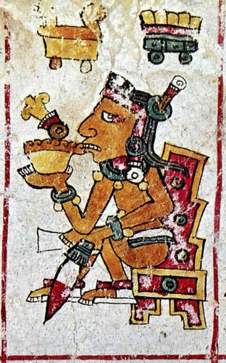
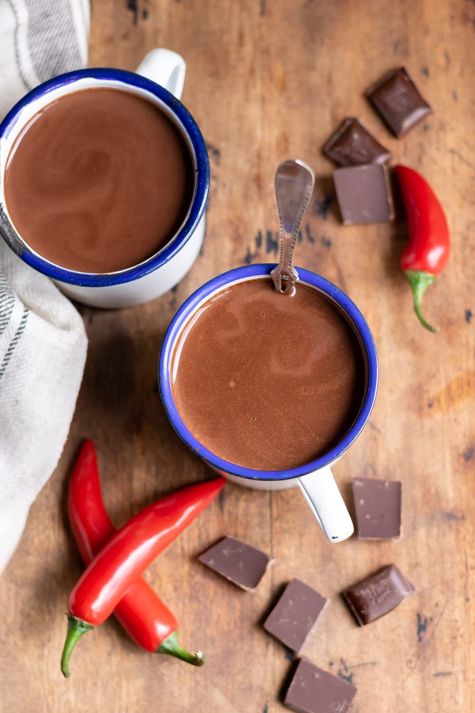

The story of chocolate begins in the tropical rainforests of Central America, where the cacao tree, Theobroma cacao, has grown wild for millions of years. Archaeological evidence suggests that the earliest use of cacao dates back to around 1900 BCE by the Mokaya people in what is now Mexico. However, it was the Olmec civilization (1500-400 BCE) that first cultivated cacao trees and developed the initial processing methods for the beans.
The Historical Journey of Chocolate

Theobroma cacao tree with ripe cacao pods

Ancient Mayan chocolate ceremony depicted in historical artwork
The Maya civilization (250-900 CE) elevated chocolate to new heights of cultural significance. They were the first to develop a sophisticated cultivation system for cacao and created the earliest known chocolate beverage, xocolatl. This drink was far different from modern chocolate – it was a bitter, frothy mixture made from ground cacao beans, water, and spices like vanilla and chili. The Maya considered chocolate to be the food of the gods, using it in sacred ceremonies and royal festivities. Cacao beans were so valuable that they were used as currency throughout Mesoamerica.
The Aztec Empire (1300-1521 CE) inherited this chocolate tradition, particularly revering it as a divine drink. Emperor Montezuma II reportedly consumed dozens of cups of chocolate daily, believing it to be an aphrodisiac and source of wisdom. The Aztecs had to import their cacao from conquered territories and other trading partners, as their capital Tenochtitlan was too high in elevation to grow cacao trees. This made chocolate an even more precious commodity in their society.

Traditional Aztec chocolate preparation method

17th century European chocolate house
The European transformation of chocolate began with the Spanish conquest of the Aztec Empire in 1521. Spanish conquistadors, initially repulsed by the bitter drink, soon discovered that adding sugar, cinnamon, and other spices made it more palatable to European tastes. The Spanish kept chocolate a secret from the rest of Europe for almost a century, establishing plantations in their colonies to control the supply. When chocolate finally spread to other European countries in the 1600s, it sparked a revolution in consumption patterns and processing techniques.
The Industrial Revolution marked another pivotal moment in chocolate's history. In 1828, Dutch chemist Coenraad van Houten invented the cocoa press, which could separate cocoa butter from roasted cacao beans, creating cocoa powder and revolutionizing chocolate production. This invention, followed by the development of solid chocolate by British company J.S. Fry & Sons in 1847, and milk chocolate by Swiss Daniel Peter in 1876, transformed chocolate from a drink into the confectionery we know today. These innovations made chocolate more affordable and accessible to the general public, setting the stage for the modern chocolate industry.

Early industrial chocolate production machinery